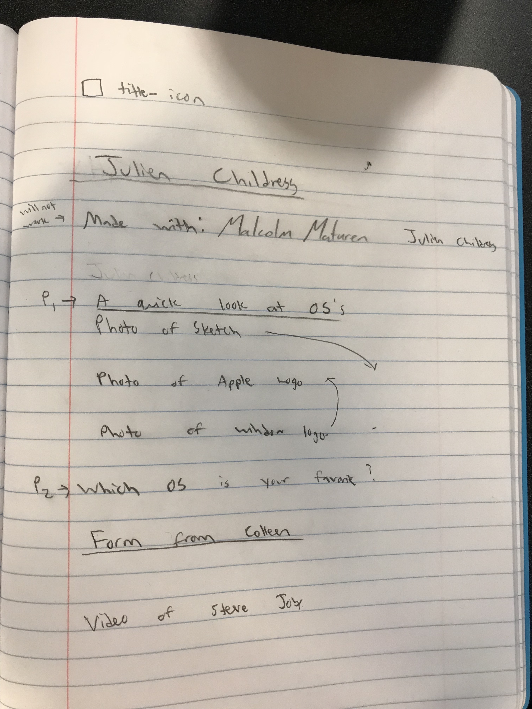
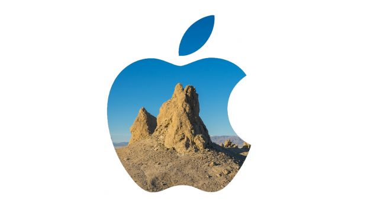
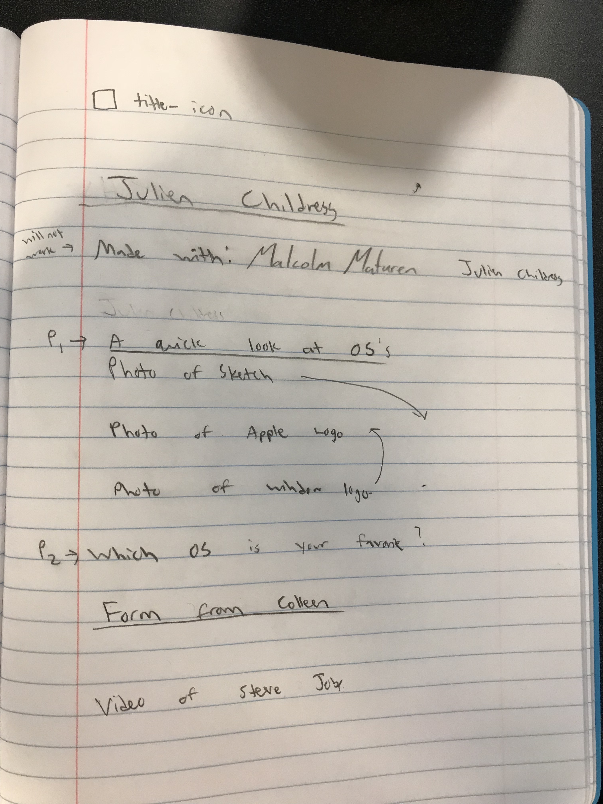
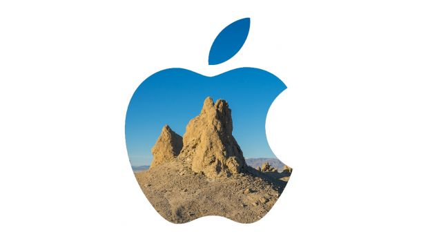

 
2. Firefox Quantum and Google Chrome support date input, but Safari and older versions of Firefox do not. Small style differences exist.
3. Selection was changed so multiple choices could be selected and be selected by text.
6.
Made with:
A quick OS Survey



2. Firefox Quantum and Google Chrome support date input, but Safari and older versions of Firefox do not. Small style differences exist.
3. Selection was changed so multiple choices could be selected and be selected by text.
6.